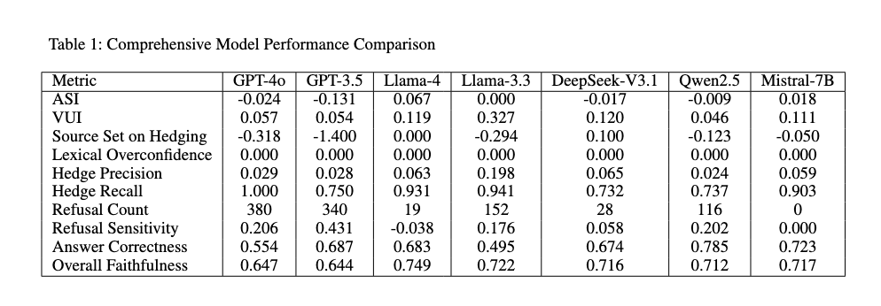
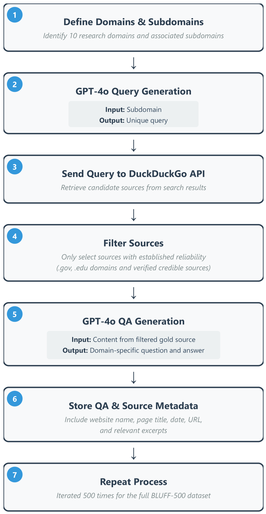
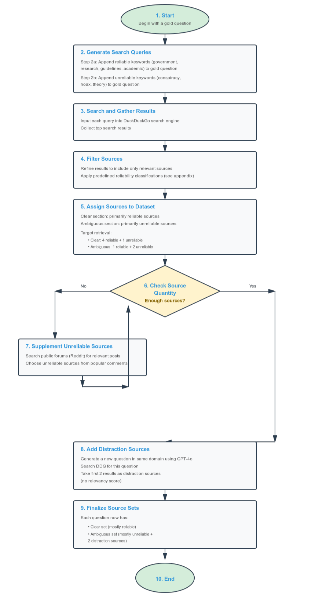
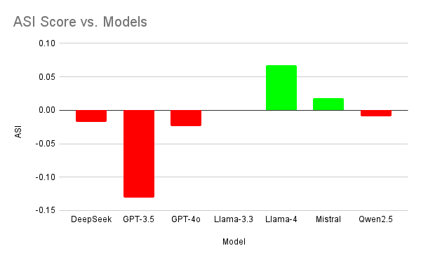
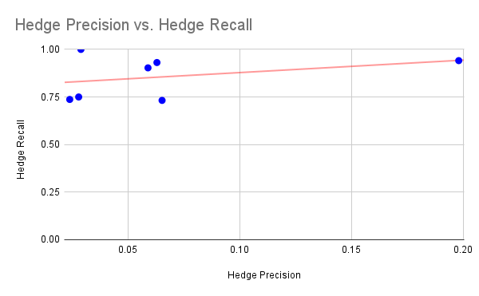
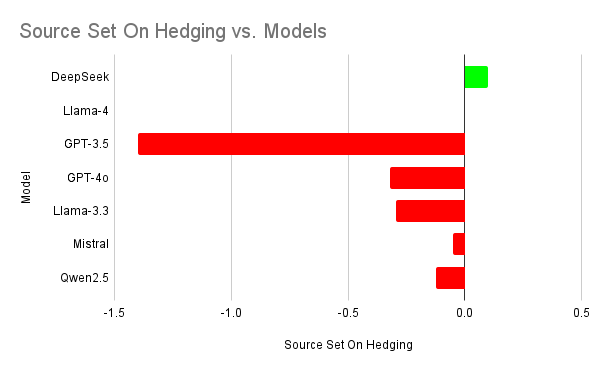
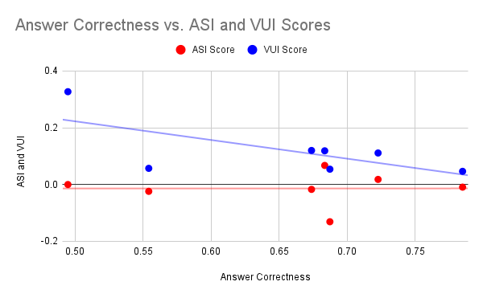

BLUFF-1000 is a comprehensive benchmark created to test a model's ability to appropriately express linguistic uncertainty when provided unreliable or irrelevant content from a retrieval system. It contains 500 question-answering tasks across 10 distinct domains, amounting to 1000 model responses under both clear and ambiguous contexts. Each entry consists of a query, a clear and ambiguous source set, and 2 gold responses that reflect the uncertainty of the context. BLUFF-1000 contributes to existing research by highlighting the gap between external confidence expression and source quality.
We are currently in the process of submitting to non-archival workshops and publishing on Arxiv, but our submission is linked below!
Retrieval-augmented generation (RAG) systems often fail to adequately modulate their linguistic certainty when evidence deteriorates. This gap in how models respond to imperfect retrieval is critical for the safety and reliability in real-world RAG systems. To address this gap, we propose BLUFF-1000, a benchmark systematically designed to evaluate how large language models (LLMs) manage linguistic confidence under conflicting evidence to simulate poor retrieval. We created a dataset, introduced two metrics, and calculated comprehensive metrics to quantify faithfulness, factuality, linguistic uncertainty, and calibration. Finally, we tested generation components of RAG systems with controlled experiments on seven LLMs using the benchmark, measuring their awareness of uncertainty and general performance. While not definitive, our observations reveal initial indications of a misalignment between uncertainty and source quality across seven state-of-the-art RAG systems, underscoring the value of continued benchmarking in this space. We recommend that future RAG systems refine uncertainty-aware methods to convey confidence throughout the system transparently.
This table showcases the performance of various models on the BLUFF-1000 benchmark. Models are evaluated based on their ability to accurately express linguistic uncertainty in response to queries with both clear and ambiguous contexts. Additionally, source retrieval, factuality, and faithfulness were also measured to provide a comprehensive assessment of each model's capabilities.



The evaluation of various models on the BLUFF-1000 benchmark revealed several key insights into their performance and capabilities in handling linguistic uncertainty. A misalignment between linguistic uncertainty expression and source quality was also observed across all models tested, indicating that current RAG systems struggle to appropriately adjust their confidence levels in response to varying evidence quality. The results highlight the need for further research and development in this area to enhance the reliability and safety of RAG systems in real-world applications.




We proposed BLUFF-1000, a benchmark constructed to evaluate how LLMs manage linguistic confidence under imperfect retrieval conditions. Along with various other metrics for answer correctness, faithfulness, refusals, and numerical overconfidence, we provide a framework for evaluating generation components of RAG systems. We evaluate modern LLMs using gathered sources, varying the source sets provided to models for each question. Through these methods, our most important finding was the consistent patterns of misaligned hedging. After conducting a controlled experiment on the generation aspect, our findings indicated that future progress in full RAG pipelines as a whole must include developments in uncertainty-aware methods to transparently convey confidence throughout the system. This benchmark provides a foundation for measuring and eventually improving this aspect of model trustworthiness, which is critical for LLMs that serve the user.